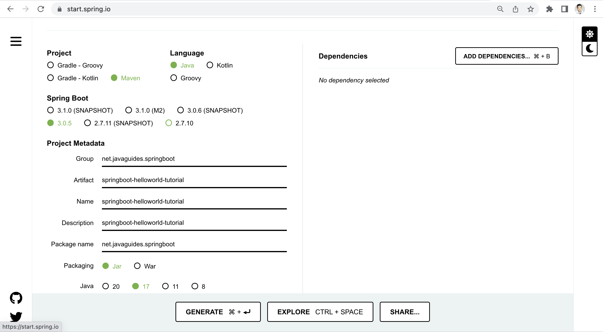
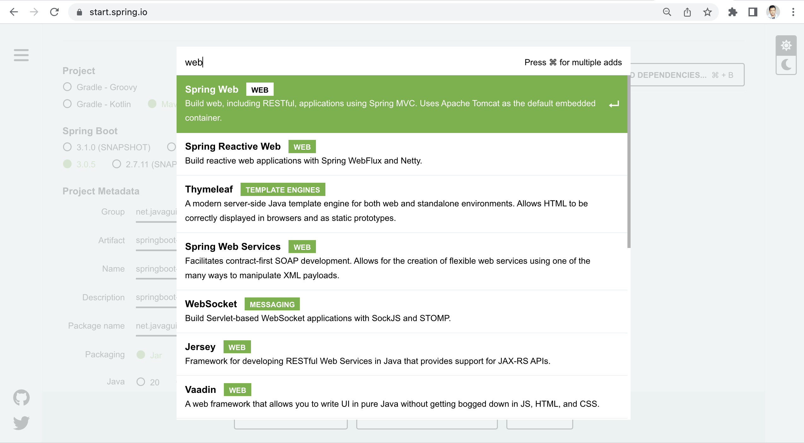
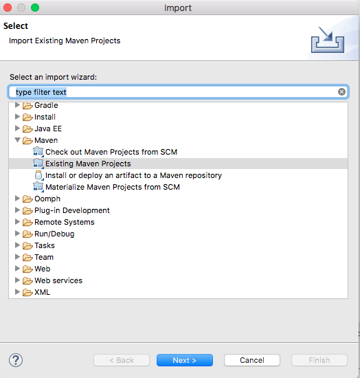
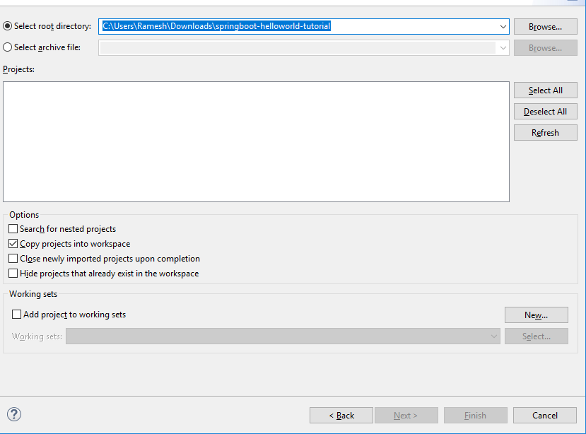

In this article, we will learn how to create a simple Spring boot project with Spring Initializr.
Spring Initializr is a great tool developed by the spring team to quickly bootstrap your Spring Boot projects.
There are many ways to create a Spring Boot application. The simplest way is to use Spring Initializr at http://start.spring.io/, which is an online Spring Boot application generator.
In this article, we will create a simple Spring boot hello world tutorial project using the Spring Initializr tool and import it to eclipse IDE.
The below gif image gives you step by step process to create a Spring boot project using Spring Initializr.
Spring Initializr is a great tool developed by the spring team to quickly bootstrap your Spring Boot projects.
Use the Spring Initializr link to access its user interface.
Look at the diagram, we have specified the project details:
To add dependencies, click on Add Dependencies button. Next, choose the dependencies:
Once, all the details are entered. Next, clicking on Generate Project button will generate a spring boot project and downloads it. Next, Unzip the downloaded zip file.
In Eclipse, Click File -> Import -> Existing Maven Project as shown below.
Navigate or type in the path of the folder where you extracted the zip file to the next screen.
Once you click Finish, Maven would take some time to download all the dependencies and initialize the project.
That’s it. Your first Spring Project is Ready.
Check out the complete Spring boot tutorial at Master in Spring Boot Tutorial.